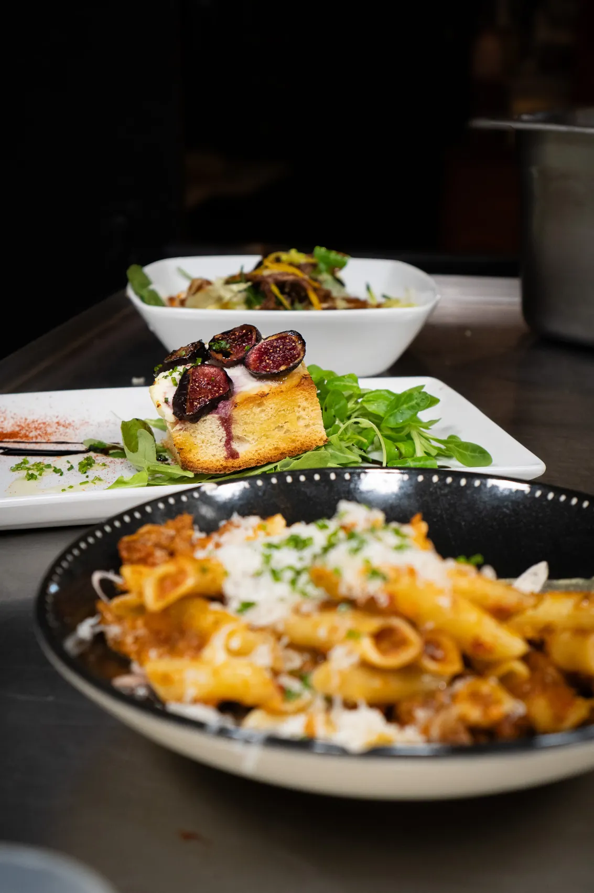
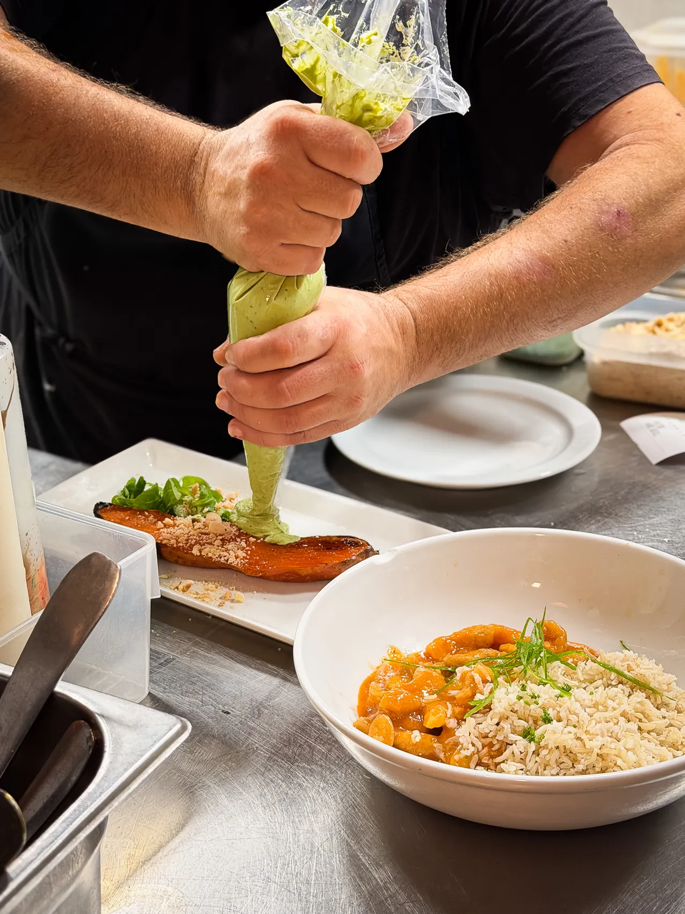
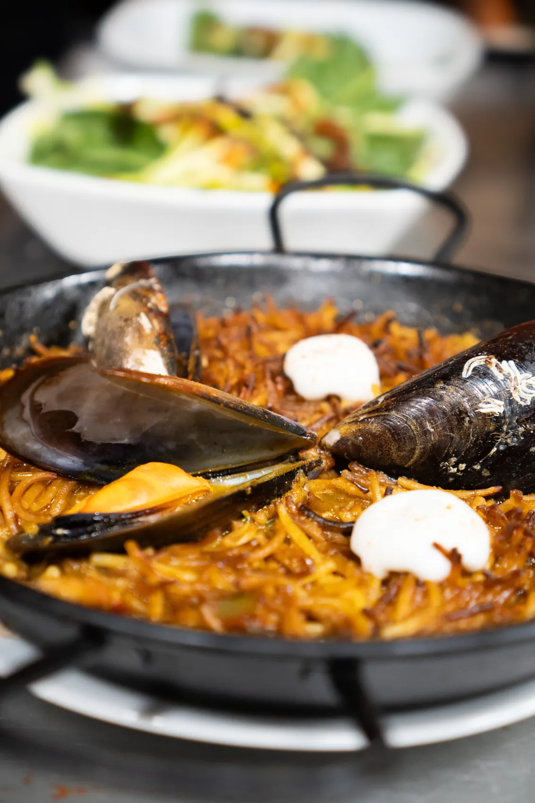
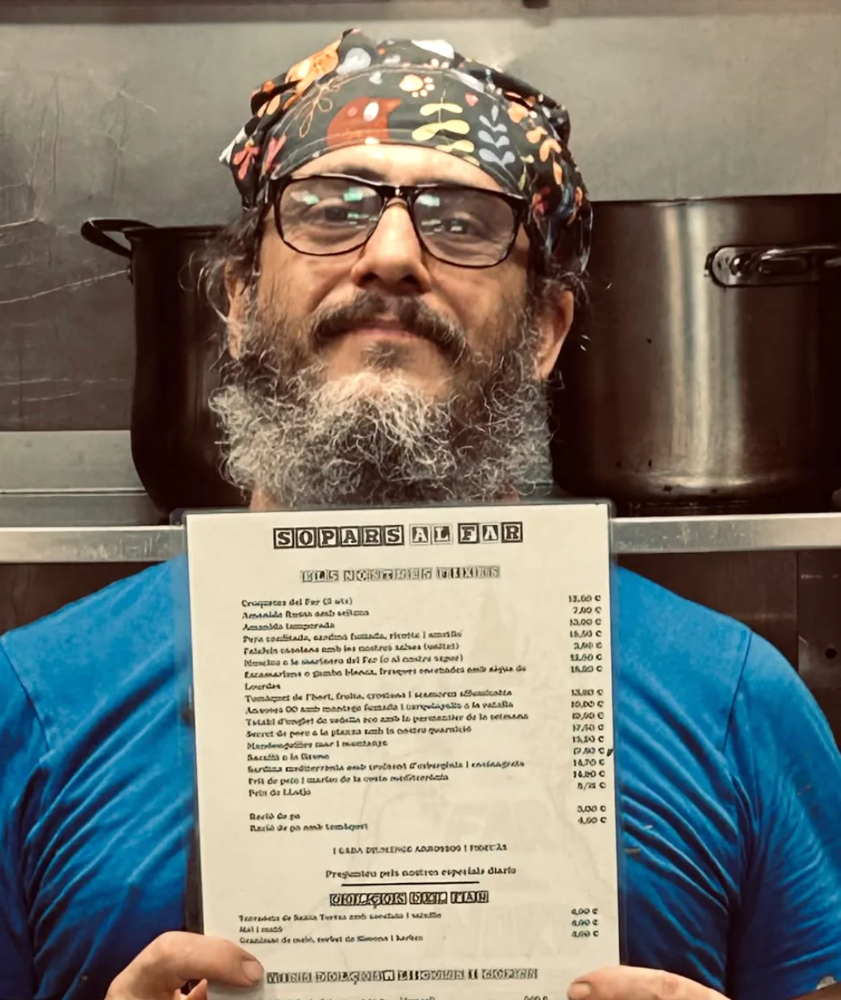
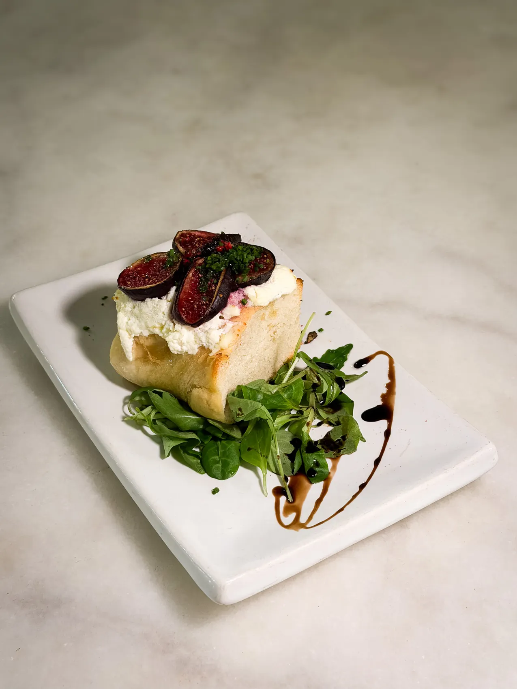

RESTAURANT CATALÀ · BARRI DE GRÀCIA
La bona cuina
sempre troba
el seu lloc.
Tradició catalana, producte de temporada i una taula per compartir al cor de Gràcia.
EST. · GRÀCIA · BARCELONA
UNA CASA AMB GUST DE BARRI
La tradició se serveix a la nostra manera.
A El Far del Nord creiem en les receptes de sempre, en el mercat de cada dia i en aquelles trobades que s’allarguen al voltant d’una bona taula.
EL FAR DEL NORD / 01
De la nostra cuina a la teva taula
Producte de temporada, receptes reconeixibles i aquell toc personal que converteix cada visita en un record.



LES PERSONES DARRERE EL FAR
Carles i Ramón.
Una història per explicar.
Darrere de cada taula hi ha persones, ofici i ganes d’acollir. Aquest espai està pensat per explicar, amb les seves pròpies paraules, la història de Carles i Ramón: com va començar El Far del Nord, què els uneix a la cuina catalana i què significa obrir les portes cada dia.
El Far del Nord
QUÈ DIUEN DE NOSALTRES
Les paraules de qui torna
Descobreix les experiències que comparteixen els nostres clients.
Google
4,6 / 5Google · Valoracions a les plataformesVeure ressenyes a Google TheFork
9,1 / 10TheFork · Valoracions a les plataformesLes puntuacions poden canviar. Consulta les ressenyes actuals a cada plataforma.

BARCELONA · GRÀCIA
La teva taula t’espera a Gràcia
Horaris
Dilluns a dijous13:00–23:30
Divendres13:00–00:30
Dissabte13:00–23:30
Diumenge13:00–17:00
Tria el dia i reserva taula en línia.
Reservar taula